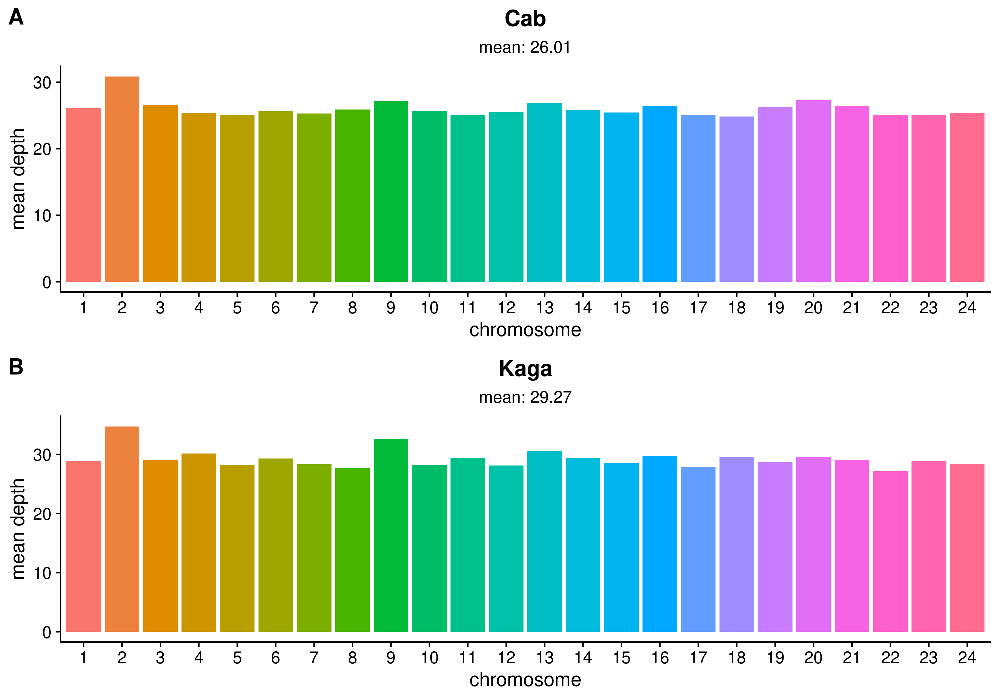

3 F0 homozygosity
3.1 F0 coverage
Our collaborators extracted DNA from the F0, F1, and F2, and sequenced the F0 and F1 samples with the Illumina platform at high coverage (~26x for Cab and ~29x for Kaga), as measured by SAMtools (Danecek et al. 2021). Figure 3.1 sets out the mean sequencing depth within each chromosome and across the whole genome for the Cab and Kaga F0 samples. Our collaborators then sequenced the F2 samples at low coverage (~1x), which would be sufficient to map their genotypes back to the genotypes of their parental strains (see section @ref(somite-f2-sequencing) below for further details).
3.2 F0 homozygosity
Before proceeding to map the F2 sequences to the genotypes of the F0 generation, I first investigated the levels of homozygosity in the F0 Cab and Kaga strains, as this would affect our ability to accurately call the F2 generation. That is to say, for regions where either F0 parent is consistently heterozygous, it would be difficult to determine the parent from which a particular F2 individual derived its chromosomes at that locus. I therefore aligned the high-coverage sequencing data for the F0 Cab and Kaga strains to the medaka HdrR reference (Ensembl release 104, build ASM223467v1) using BWA-MEM2 (Vasimuddin et al. 2019), sorted the aligned .sam files, marked duplicate reads, and merged the paired reads with picard (“Picard Toolkit” 2019), and indexed the .bam files with SAMtools (Li et al. 2009).
To call variants, I followed the GATK best practices (to the extent they were applicable) (McKenna et al. 2010; DePristo et al. 2011; Van der Auwera and O’Connor 2020) with GATK’s HaplotypeCaller and GenotypeGVCFs tools (Poplin et al. 2018), then merged all calls into a single .vcf file with picard (“Picard Toolkit” 2019). Finally, I extracted the biallelic calls for Cab and Kaga with bcftools (Danecek et al. 2021), counted the number of SNPs within non-overlapping, 5-kb bins, and calculated the proportion of SNPs within each bin that were homozgyous.
Figure @ref(fig:somite-f0-cab) is a circos plot generated with circlize (Gu et al. 2014) for the Cab F0 strain used in this experiment, featuring the proportion of homozygous SNPs per 5-kb bin (green), and the total number of SNPs in each bin (yellow). As expected for a strain that has been inbred for over 10 generations, the mean homozygosity for this strain is high, with a mean proportion of homozygosity across all bins of 83%.

However, the levels of homozygosity in the Kaga strain used in this experiment was far lower, with a mean homozygosity across all bins of only 31% (Figure 3.2). This was a surprise, as it is an established strain that has been extant for decades, and we therefore expected the level of homozygosity to be commensurate with that observed in the Cab strain. An obvious exception is chr22, for which Kaga appears to be homozygous across its entire length.

To determine whether the low levels of observed homozygosity in Kaga was affected by its alignments to the southern Japanese HdrR reference, we also aligned the F0 samples to the northern Japanese HNI reference (Figure 3.3). This did not make differences to the levels of observed homozygosity in either sample, which gave us confidence that the low homozygosity observed in Kaga was not driven by reference bias. I understand from our collaborators that the low homozygosity of this Kaga individual must have resulted from the strain having been contaminated at some stage by breeding with a different inbred strain prior to when they received the individuals.